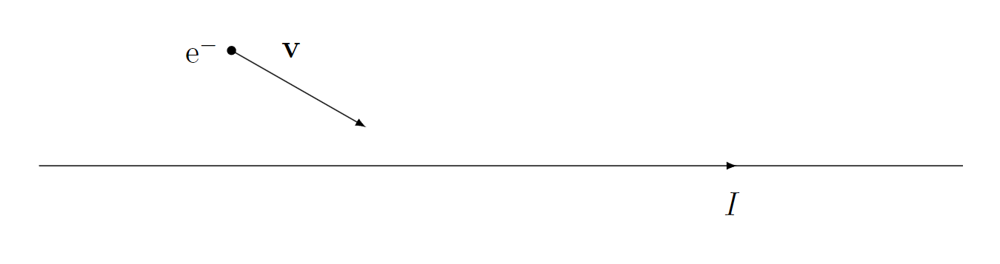

Termín: 31. 9. 2023
Ke každému typu motoru z následujícího rámečku přiřaďte rok jeho vynálezu a příslušný obrázek.
Motory
piezoelektrický motor, parní motor, raketový motor, elektromotor, proudový motor, Dieselův motor
Roky
1965, 1834, 1939, 1712, 1926, 1897
populární fyzika
Svítí Měsíc?
a) Ano, vyzařuje vlastní paprsky.
b) Ano, odráží paprsky od Slunce.
c) Ano, odráží paprsky od Země.
d) Ano, všechny výše uvedené možnosti jsou správné.
e) Ne, žádná z výše uvedených možností není správná.
astronomie
Které z následujících konstant nejsou ve skutečnosti konstantní v čase?
a) Planckova Konstanta
b) Solární konstanta
c) Hubbleova konstanta
d) Konstanta jemné struktury
populární fyzika
Co byste očekávali, že by se stalo, kdyby namísto přibližné hodnoty $6{,}626 \cdot 10^{-34}\,\mathrm{J{\cdot}s}$ měla Planckova konstanta hodnotu $6{,}626 \cdot 10^{34}\,\mathrm{J{\cdot}s}$?
kvantová fyzika
Jak bude vypadat trajektorie elektronu pohybujícího se kolem vodiče tak, jak ukazuje obrázek?
elektromagnetismus
Napište, jaký je váš názor na tématiku prozkoumávání vesmíru, i když jsme ještě neprozkoumali oceány na Zemi.
astronomie
Proč je možné bez výrazné ztráty výpočetní přesnosti předpokládat, že se jádra v molekulách v porovnání s elektrony vůbec nehýbou?
kvantová fyzika
Vypočítejte, jaký výkon bychom museli čerpat z přílivových elektráren, aby se Měsíc přestal oddalovat od Země. Počítejte, že se Měsíc od Země oddaluje rychlostí $4\,\mathrm{cm}$ za rok.
astronomie